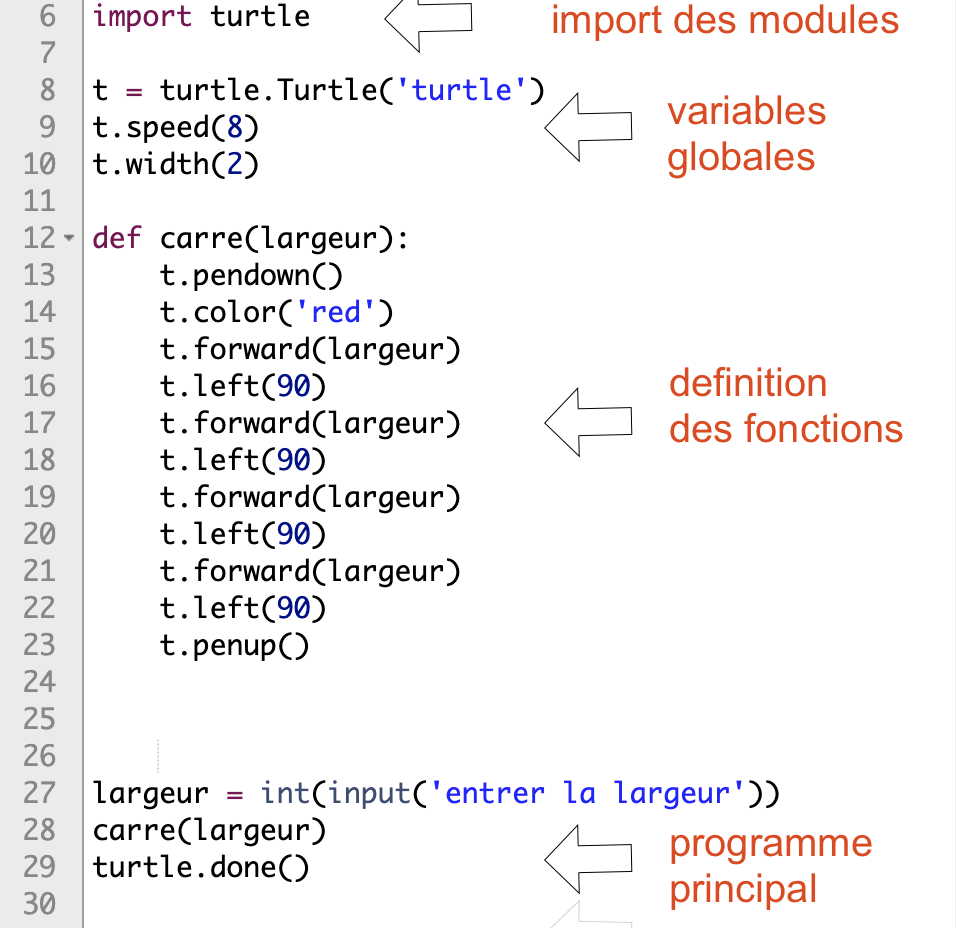
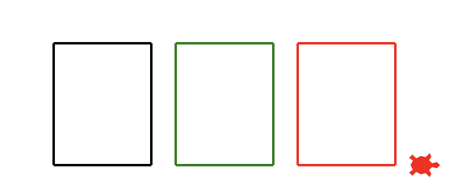
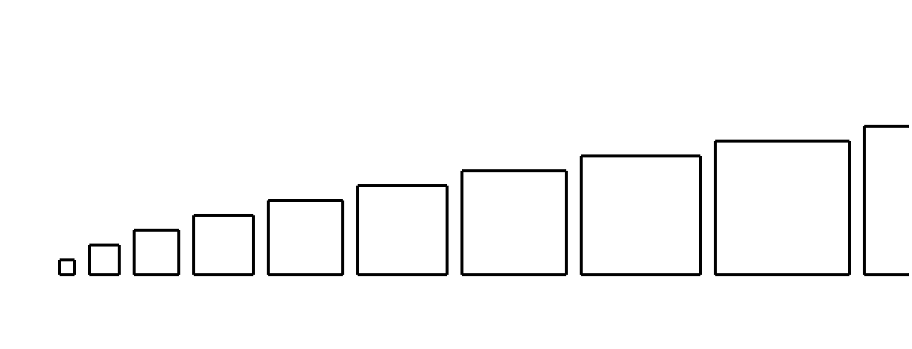
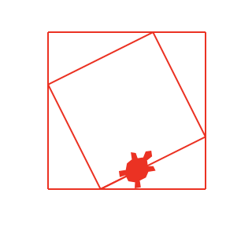
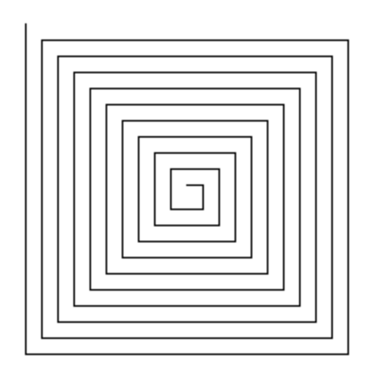

fonctions et Turtle
Le module Turtle permet d’avoir un environnement simple muni d’une interface graphique.
La page suivante présente un aide-mémoire avec les principales instructions.
Il est conseillé d’avoir bien lu et traité les exemples des pages:
Premiers tracés
Script initial
Ces exemples utilisent une boucle bornée pour répéter des consignes (for .. in range)
Se rendre sur le notebook Turtle
Dans une nouvelle cellule: Copier-coller le script ci-dessous. Executer et analyser celui-ci.
Un script Python devra suivre une certaine structure pour la position de l’import des modules, déclaration de variables, des fonctions, et enfin le programme principal:

premier script avec le module turtle
Le programme principal finira par turtle.done(), ce qui execute le tracé.
Modifier la fonction carre: utiliser une boucle bornée
Modifier pour avoir un script qui utilise le moins de lignes possibles pour cette fonction. (Rassembler les instructions
t.left + t.forwarddans une boucle)
Utiliser pour cela une boucle bornée for.
question 1: recopier le script de votre fonction
Une variante du programme: dessiner un rectangle
Definir et utiliser une fonction
rectanglepour tracer un rectangle. On définira une nouvelle variablelongueurqui sera utile comme paramètre de la fonction.
La valeur de cette variable sera introduite par une fonction input, comme dans le script précédent.
question 2: recopier le script de votre fonction
Dessiner des rectangles
Reproduire, à l’aide de votre fonction, le dessin ci-dessous. Celui-ci forme 3 rectangles colorés de dimension $80x100$.

rectangles côte à côte
question 3: recopier le script de votre programme (ne pas préciser les import et les definitions de fonctions)
Utiliser un variant de boucle
On utilisera maintenant la valeur de i dans l’instruction for i in range(N):
Pour dessiner la figure suivante, on utilisera une boucle bornée, qui répète plusieurs fois le bloc de code:
- calculer la valeur de x
- dessiner un carré de largeur x
- lever le stylo
- avancer jusqu’à la prochaine position.

La valeur du paramètre x, dans la fonction carre(x), dependra du variant i.
Ecrire un programme qui réalise ce dessin, à partir d’une fonction mathématique $x = a.i + b$
question 4: recopier le script de votre programme.
Dessiner des spirales
Avec des carrés emboités
Dans un carré de côté 100, on trace un carré dont les sommets sont situés au tiers des côtés du carré initial, et on répète indéfiniment l’opération.

On utilisera une boucle non bornée while avec le variant largeur. La condition d’execution pourrait être par exemple, largeur>20:
A chaque itération:
- dessiner un carré avec la fonction
carreet le paramètrelargeur. - avancer de $1/3 \times largeur$
- tourner de 26.565 degrés
- reduire la largeur d’un facteur 0.745:
largeur = largeur * 0.745
question 5: recopier le script de votre programme principal
Avec des segments
Ecrire une fonction spirale qui devra reproduire une figure sur le modèle de la suivante:

- La fonction utilisera un paramètres: la
longueurdu segment initial - le nombre d’itérations
Nvoulues
Dans la fonction spirale: utiliser une boucle (for ou while) pour executer un certain nombre de traits.
question 6: recopier le script de votre fonction
Liens
- Editeur en ligne: https://pythonandturtle.com/turtle